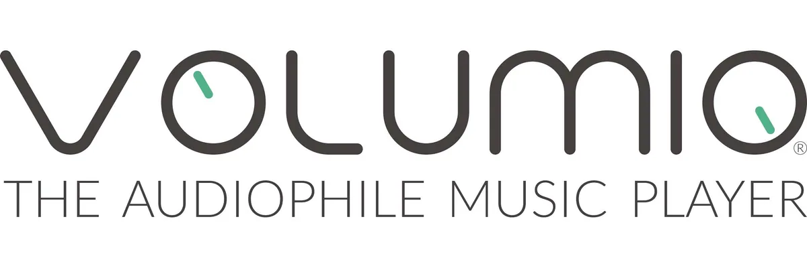

Volumio 2
- The Volumio 2 project for audio playback.

- 1/5 dimensions have verifiable sources
- Repository metadata supports only docs/community. Other dimensions remain null, so this discovery stays To verify and is not yet rated.
Candidate route
- Candidate use Evaluate turning an older small host into a dedicated music player.
- Hardware scope Hosts and audio devices considered for Volumio 2; exact boards, DACs, and current support status were not checked.
- What is known The Volumio 2 project for audio playback.
- GitHub Volumio 2 - Audiophile Music Player
- Evidence note E0 discovery candidate; descriptions are based only on GitHub repository metadata. Exact-device compatibility, installation outcomes, recovery paths, and long-term stability were not independently verified.
- Review record PS-volumio2 · 2026-10-23T16:55:18Z
Before you start
- Do not flash, disassemble, or buy parts without installation and recovery material for the exact model, hardware revision, and firmware.
Repository snapshot
- Archived No; not archived when checked
- Last push 2023-04-26T16:01:53Z
- Default branch master
- API license identifier NOASSERTION
- The license snapshot does not automatically cover firmware, models, images, trademarks, or third-party components; a recent push does not prove compatibility.